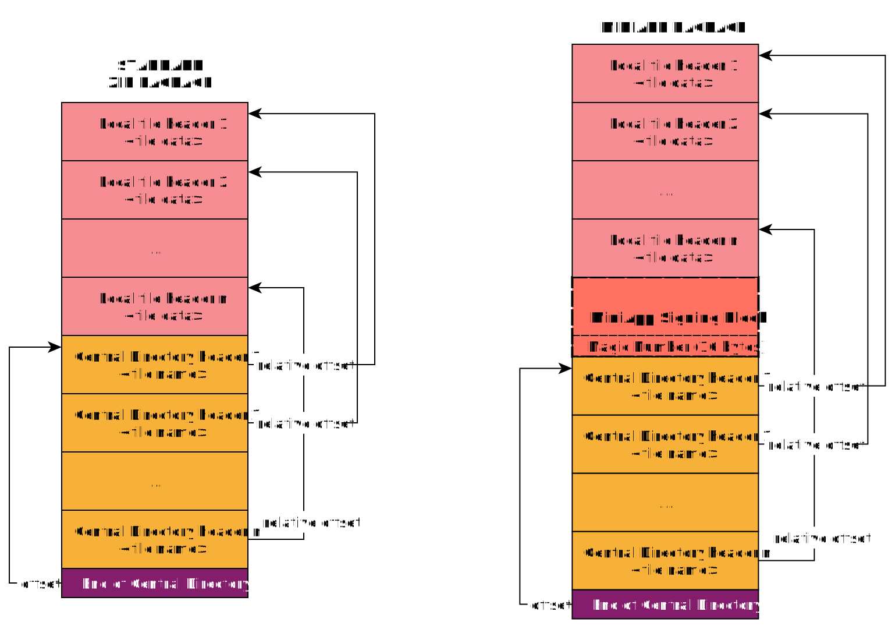
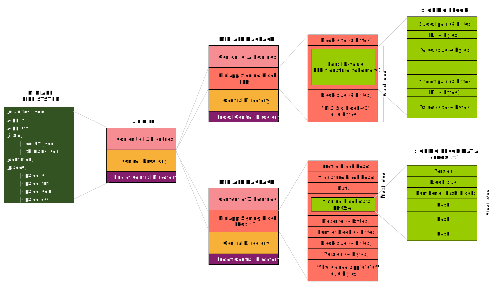

This specification defines semantics and conformance requirements for a MiniApp package, and the structure of the single file container that holds the resources of a MiniApp, including a manifest file, static page templates, stylesheets, JavaScript documents, media files and other resources. Instances of the MiniApp package are used for MiniApp distribution and execution on runtime environments (MiniApp user agent).
Status of This Document
This section describes the status of this
document at the time of its publication. A list of current W3C
publications and the latest revision of this technical report can be found
in the W3C technical reports index at
https://www.w3.org/TR/.
Publication as a First Public Working Draft does not
imply endorsement by W3C and its Members.
This is a draft document and may be updated, replaced or obsoleted by other
documents at any time. It is inappropriate to cite this document as other
than work in progress.
This document was produced by a group
operating under the
W3C Patent
Policy.
W3C maintains a
public list of any patent disclosures
made in connection with the deliverables of
the group; that page also includes
instructions for disclosing a patent. An individual who has actual
knowledge of a patent which the individual believes contains
Essential Claim(s)
must disclose the information in accordance with
section 6 of the W3C Patent Policy.
MiniApp is a concept of light software application, that can be distributed through any digital means, and accessed through the Web. MiniApps are defined by a concrete file structure and all their resources are packed within a single file that represents the whole MiniApp package that can be processed and executed by MiniApp user agents.
A MiniApp package contains a directory structure that holds the specific resources of the MiniApp that defines the rendering, operation, and interaction with the end-users — including static page templates, stylesheets, JavaScript documents, media files, and other resources — and the manifest. The MiniApp manifest, located in the central directory of the package, describes the MiniApp, including information about page routing, styles, and other operational and rendering details of the MiniApp, as well as descriptive information for humans.
The MiniApp runtime environment (MiniApp user agent) identifies MiniApp package files through the standard MiniApp package format and the specific MIME media type, defined in this document. After retrieving the MiniApp ZIP container, the MiniApp user agent loads the static page templates, stylesheets, JavaScript files, and other resources into the cache, following a dereference and processing algorithm. These MiniApp resources will remain available in the cache until the next update, avoiding unnecessary network fetches.
In terms of launch mode, a MiniApp can be launched normally when offline. The MiniApp user agent locates the specified start page from the package cache path and launches the MiniApp according to the description set out in the MiniApp manifest file.
1.2 Terminology
The following terms are specific to MiniApps.
Digital signature
A cryptographic mechanism and hashing techniques to prove the authenticity of resources. Digital signatures can demonstrate the origin, time, identity, and status of resources and of the MiniApp package.
File name
The name of any file within a MiniApp package, either a directory or a file within a directory.
MiniApp
A light software application, that can be distributed through any digital means, and accessed through the Web. MiniApps are defined by a concrete file structure, distributed within a single file MiniApp ZIP container that represents the whole MiniApp package that can be processed and executed by MiniApp user agents.
A logical document that is part of the view or the logic of a MiniApp. Resources are included physically in MiniApp packages.
MiniApp page
A collection of information that is displayed in a MiniApp user agent, under the scope of a specific MiniApp.
MiniApp user agent
A software application that gets, process and renders MiniApp packages, enabling execution and end-user interaction with MiniApps.
MiniApp ZIP container
The ZIP-based packaging and distribution format for MiniApps, as defined in MiniApp ZIP container section.
MiniApp widget
A special type of MiniApp page that is displayed standalone in host environments such as assistants and device search pages to connect MiniApp services in specific scenarios.
MiniApp start page
The entry point of a MiniApp. The resource that is loaded and rendered by the MiniApp user agent at the launch of the application.
1.3 Conformance
As well as sections marked as non-normative, all authoring guidelines, diagrams, examples, and notes in this specification are non-normative. Everything else in this specification is normative.
The key words MAY, MUST, MUST NOT, and SHOULD in this document
are to be interpreted as described in
BCP 14
[RFC2119] [RFC8174]
when, and only when, they appear in all capitals, as shown here.
The MiniApp Packaging specification depends on the Infra Standard [INFRA] to describe algorithms.
2. Package Conformance
A conformant MiniApp packageMUST meet the following criteria:
The root directoryMUST contain one configuration file, named manifest.json, to describe and configure the runtime environment as defined in the MiniApp manifest specification [MINIAPP-MANIFEST].
The root directoryMUST contain one script document, named app.js, with the basic control logic of the MiniApp.
The root directoryMUST contain one stylesheet, named app.css, following a syntax, structure and format as defined in the CSS Resources section.
The file system of a package MAY contain other subdirectories and files of different nature as defined in the Directory and File System Structure section.
2.1 Directory and File System Structure
The MiniApp package has a file structure with some restrictions and reserved files and subdirectories.
The following example shows a typical file system structure:
The MiniApp root directory is the base directory of the MiniApp package file system.
The root directory of a MiniApp package holds several reserved files that include global data and information about the lifecycle management of the MiniApp, including:
manifest.json
The MiniApp manifest is a JSON document responsible for the global configuration of the MiniApp. A manifest file contains a collection of mandatory and optional attributes that indicate the setup of the MiniApp, including routes and paths of the pages and the window configuration of the MiniApp (e.g., styles of the navigation bar, background image, background color, page title, among others), according to the MiniApp Manifest specification [MINIAPP-MANIFEST].
app.css
This file is the main stylesheet of the application, where developers define common styles and look and feel aspects of the pages within the MiniApp. It MAY be empty.
app.js
This script document has the basic service logic of the MiniApp and includes the essential configuration and control of the MiniApp lifecycle [MINIAPP-LIFECYCLE], including the management of events for launching, showing, and hiding the MiniApp.
2.1.2 pages Directory
The pages directory contains a set of files for the display and user interaction of the MiniApp pages.
A MiniApp page is defined by a set of resources, whose files are identified by a unique filename (e.g., intro) and a specific extension that defines the resource type, such as the business logic of the application (e.g., intro.js), the structure and content (e.g., intro.html), and the scoped stylesheet (e.g., intro.css).
Developers MAY include other types of resources according to their needs. Also, the files related to a page (identified with the same filename) MAY be organized either in specific subdirectories for each page or stored under the pages directory directly.
Example 2: Page resources directly in the pages directory
A .html resource defines the structure and content of a MiniApp page. Based on HTML, the syntax, structure, and other requirements of this type of file are defined in the HTML Resources section.
A .css resource defines the stylesheet of a MiniApp page. The syntax, structure, and other requirements of this type of resource are defined in the CSS Resources section.
A .js resource contains the business logic of the MiniApp page, including functions, data, and other configuration aspects needed for the operation of the application. This type of resource is responsible for the setup and lifecycle management of MiniApp pages, as defined in the MiniApp Lifecycle specification [MINIAPP-LIFECYCLE]. The syntax and format of these types of files are defined in the Scripting Resources section.
2.1.3 common Directory
The optional common directory contains resources, such as components, multimedia resources, documents and libraries that are accessible from the pages in a MiniApp. The internal structure of this directory is flexible, so these common resources MAY be organized in customized subdirectories and using different name conventions, as needed.
The i18n Directory contains multi-language localization resources to support the internationalization of the MiniApp contents. The filename of each .json document in this directory follows the Language-Tag notation as defined in [BCP47] and represents the specific configuration for that particular language.
Any file name within a MiniApp packageMUST comply with the following restrictions to accommodate the potential limitations of the operating systems and facilitate compatibility with the majority of the platforms:
If a MiniApp vendor imposes length limits on path and file names, it is important to avoid mid-character truncation due to the difference between bytes and characters in multibyte encodings such as UTF-8. See the text truncation best practice for more information.
HTML resources are documents that contain markup and information to define MiniApp pages, and their user interfaces, including the structure, visual components, and interaction elements.
An HTML resourceSHOULD use the file extension .html.
Editor's note
To define the HTML profile of MiniApp Content Documents.
2.2.2 CSS Resources
CSS resources are stylesheets that describe the rendering and appearance of MiniApp pages. CSS resources can be global, affecting all the pages in a MiniApp (i.e., app.css in the root directory), or with local scope, just affecting a specific page in the MiniApp.
This specification supports the CSS modules as defined in the [CSS-SNAPSHOT].
CSS resources MUST meet all the following criteria:
Syntax and content
A CSS resourceMUST follow described using the syntax and definitions of CSS as described in the [CSS-SNAPSHOT].
A CSS resource filename SHOULD use the file extension .css.
2.2.3 Scripting Resources
Scripting resources are documents that contain script elements and data to control the business logic and functionality of the application, adding interactivity and managing the lifecycle of the MiniApp. There is a global scripting resource (i.e., app.js in the root directory) that includes data and functions available for all the pages of the MiniApp, and with specific logic to control the application's lifecycle. Each MiniApp pageMAY have associated specific scripting resources, with the scope limited to the concrete page.
Scripting resources MUST meet all the following criteria:
A MiniApp localization resource is a document of a MiniApp package that included localized content as part of the internationalization mechanism of MiniApps.
A multilingual MiniApp MAY has several localization resources that will be used during the localization process by the user agents to render content according to the system locale or the user's language preferences. These resources contain JSON objects with key-value pairs that contain the unique identifier (the key) of a localizable term or expression and the representation in the concrete language (the value).
A localization resourceMUST be composed of key-value pairs. Each key represents a unique identifier for each localizable string (the values).
3. MiniApp ZIP Container
3.1 Introduction
This section is non-normative.
A MiniApp ZIP container is a physical single-file representation of a MiniApp that can be used to distribute it in different scenarios, including:
An organization that stores and lists catalogs of MiniApps (i.e., marketplace);
A developer that builds a MiniApp and delivers it to a marketplace;
A developer that shares a MiniApp with the QA department for testing.
A MiniApp ZIP container contains all the resources that conforms a MiniApp, according to the MiniApp package structure in a single file. This format supports the use of compression mechanisms.
3.2 ZIP File Requirements
A MiniApp ZIP container uses the ZIP format as defined in [ZIP], including some particularities:
MiniApp ZIP containers MUST NOT use the ZIP encryption mechanisms.
Data integrity MUST be provided for each file using CRC32 as specified in [ZIP].
MiniApp ZIP containers MUST NOT use the features in the ZIP application note [ZIP] that allow ZIP files to be spanned across multiple storage media, or split into multiple files.
MiniApp ZIP containers MUST include ZIP uncompressed (method 0, file stored) and Deflate-compressed (method 0, lossless data compression) contents within the ZIP archive, according to the [ZIP] specification.
MiniApp ZIP containers MUST use UTF-8 [Unicode] for encoding file names.
MiniApp ZIP containers MUST NOT use patented features.
MiniApp ZIP containers MAY include a special block, the MiniApp signing block, to allow digital signatures affecting the whole package.
The minimum version of ZIP to extract a MiniApp ZIP container is 2.0 (supporting folders and Deflate compression), according to the [ZIP] specification.
The structure of a MiniApp ZIP container is as follows:
[ZIP File Entries]
[MiniApp Signing Block]
[ZIP Central Directory]
[End of ZIP Central Directory]
Figure 1 ZIP package and MiniApp package with an optional signing block
The MiniApp ZIP container is parsed by first finding the start of the ZIP Central Directory (locating the ZIP End of Central Directory record at the end of the file, then reading the start offset of the Central Directory from the record). Every MiniApp signing blockMAY include a signing block magic numbers block, as specified in Digital Signature Requirements, to identify the presence of digital signatures. Once the "magic numbers" block is recognized, the user agent would be able to process the digital signatures stored in the signing block, in the immediately preceding section of the Central Directory, as shown in Figure 2.

Figure 2 ZIP and MiniApp packages with references to the different blocks using relative offset addessing
MiniApps vendors MAY adopt the digital signature schemes depending on their needs.
Editor's note: To add extension
MiniApp files MAY be identified by the .ma file extension although the use of a file extension is not required.
3.3 Digital Signature Requirements
A MiniApp ZIP containerMAY include none, one, or more signatures to help to detect any changes to the protected parts of the software, guaranteeing the integrity of the MiniApp.
A MiniApp signing block is a collection of bytes that contains specific information and metadata about the digital signature that affects a MiniApp, partially or as a whole. The signing block of a MiniApp ZIP containerMUST be located immediately before the central directory of the ZIP container, in a way that makes it easier to locate the block if exists.
The signing block magic numbers block is A 16-byte sequence with a unique fingerprint that identifies a digital signature mechanism for a MiniApp package, stored in the signing block of MiniApp ZIP container.
Although this document does not recommend any specific digital signature mechanism (i.e., hash algorithms, encryption methods, etc.), the signing block, if present, MUST meet the following criteria:
Signing block magic numbers
A signing blockMUST contains signing block magic numbers, as the preceding block of the Central Directory to identify univocally the type of digital signature included.
4. Internationalization
Internationalization, abbreviated to i18n, is the process of designing and developing a product in a way that ensures it can be easily adapted for users from any culture, region, or language.
Localization is the process of content adaptation to meet a target language or cultural requirements.
MiniApps enable localization of contents using a mechanism based on localized documents placed in the reserved i18n Directory. This mechanism allows authors to place localization resources, named according to a language-range [BCP47] and the .json extension. This is, documents with the localization resources will be identified with language tags [BCP47] that represent the locale of the content. MiniApp user agents match the language ranges held by their locales to the appropriate locale filename.
Launch MiniApp passing miniapp_package, manifest, start_page, and locale.
5.1 MiniApp ZIP Container Retrieval
User agentsMAY obtain MiniApp ZIP containers through different channels, retrieving the file over the network (i.e., using HTTPs, WebSocket, FTP, or other specific TCP/UDP based protocols), also from the filesystem or using any other mechanism.
To retrieve a MiniApp ZIP container, given URLminiapp_uri, perform the following steps. They return a MiniApp ZIP container.
If supplied_mime_type is not equal to application/miniapp-pkg+zip, then return failure.
Return resource.
5.2 MiniApp ZIP Container Verification
User agentsMAY guarantee the legitimacy and integrity of the MiniApp ZIP container and its content by verifying digital signatures and applying cryptographic mechanisms.
To verify a MiniApp ZIP container, given MiniApp ZIP containerminiapp_zip_file, perform the following steps:
If the user agent has the capability to perform digital signature(s) verification of miniapp_zip_file, then: Process the digital signatures with miniapp_zip_file.
5.2.1 Digital Signatures Processing
The MiniApp ZIP containerMAY contain a signing block that includes one or more signatures. The signing schemes and cryptographic mechanisms depend on the concrete implementation by user agents.
Signing schemes are identified by the magic numbers section included in the MiniApp ZIP container, a 16-byte sequence located immediately before the Central Directory of the ZIP package.
To process the digital signatures, given MiniApp ZIP containerminiapp_zip_file, perform the following steps:
Let eocd_pointer be a byte sequence as the result of locating the byte sequence 0x06054b50 (read as little-endian) in miniapp_zip_file that marks the End of the Central Directory [ZIP].
Set eocd_pointer to eocd_pointer + 0x00000010.
Let cd_pointer be the result of reading the 4-byte sequence at eocd_pointer.
Let magic_numbers_pointer be eocd_pointer - 0x00000010.
Set magic_numbers to the 16-byte block at magic_numbers_pointer.
Process the digital signatures with magic_numbers and miniapp_zip_file.
Note: Usage
MiniApp user agents implement specific digital signature processing algorithms based on their needs and requirements.
User agentsSHOULD prepare the runtime environment that contains both the logic and the view layers. The logic layer is responsible for logic and control of the application (i.e., app.js, and page.js files). The view layer is responsible for the visual environment and rendering, including the page resource files, such as component templates and stylesheets. In preparation for running a MiniApp, user agentsMUST set up the environment with the configuration specified by the MiniApp manifest metadata.
User agentsMUST identify and load the start page as the MiniApp entry point, according to the following algorithm.
To prepare the platform runtime, given URLminiapp_uri and ordered mapmanifest, perform the following steps. They return a MiniApp start page.
If app.js does not exist in the root directory, then return failure.
If app.css does not exist in the root directory, then return failure.
Let start_page be the result of determining the start page, passing miniapp_package, miniapp_uri and manifest.
Return miniapp_uri.
5.4.1 Platform Compatibility Verification
User agentsMUST verify that a MiniApp is compatible with them and can run properly in their platform. This verification is performed using the metadata specified in the MiniApp manifest, including the supported version of the platform and checking the pages and resources needed in the execution.
To verify platform compatibility, given MiniApp Packageminiapp_package and ordered mapmanifest, perform the following steps:
Set platform_required to manifest["platform_version"].
If platform_required is not compatible with the user agent configuration, then return failure.
If page does not exist in the miniapp_package, return failure.
If manifest["widgets"] exists, then: For eachwidget_path of listmanifest["widgets"]:
If widget_path does not exist in the miniapp_package, return failure.
5.4.2 Start Page Identification
By default, user agentsMUST load the start page indicated in the MiniApp manifest as the entry point when the MiniApp is launched. This start page by default MUST be overridden if a valid page is specified in the MiniApp URI, as specified in the following algorithm.
To determine the start page, given MiniApp Packageminiapp_package, URLminiapp_uri, and ordered mapmanifest, perform the following steps. They return a URL.
If start_page is not set, or if start_page is equal to null, or if start_page does not exist in miniapp_package, then:
Set start_page to the result of extracting the start page from manifest, passing manifest.
If manifest["lang"] exists, and if manifest["lang"] is supported by the user agent, then:
Set locale to manifest["lang"].
Return locale.
6. Security and Privacy Considerations
6.1 Package Integrity and Trustworthiness
To ensure the integrity and trustworthiness within the distribution stage of MiniApps, a MiniApp packageSHOULD be protected by one or more digital signatures. These signatures, along with certificates issued by trusted authorities, could help third parties to validate the authorship of the MiniApp (e.g. the MiniApp developer), and other entities involved in the development or distribution of the software (e.g., an application store as MiniApp distributor).
The usual scenarios where digital signatures are included in MiniApps are, but not limited to:
A digital signature (with a valid certificate) of the author that ensures the origin of the MiniApp, which gives a recipient strong reason to believe that this package was created by a known sender (authentication) and that the message was not altered in transit (integrity). Thus, an end-user or a hosting platform can decide whether to install the MiniApp package depending on the status and quality of the author (e.g., credits, blocklist, certifications, etc.).
Distributors’ signatures (for example, official marketplace signatures), which are used to ensure the trustworthiness of the delivery channel. This kind of signature protects end-users from tampering activities and ensures a healthy ecosystem of applications.
No specific digital signature mechanism, cryptographic technology, or algorithm is recommended in this specification. MiniApp vendors MAY or MAY NOT implement digital signature mechanisms, according to their use cases. When implemented, the § 3.3 Digital Signature Requirements shall be followed.
Some examples of technologies and encryption methods are introduced in the § B. Signature Schemes.
6.2 Content Confidentiality
This specification does not recommend any encryption mechanism for the MiniApp package to protect its confidentiality. However, it doesn't preclude an implementation from deploying some encryption mechanism for special purposes.
A. Acknowledgments
This section is non-normative.
Editor's note
List all the contributors and W3C Team contacts
B. Signature Schemes
This section is non-normative.
Every user agentMAY support its own digital signature schemes depending on their needs. This section includes some examples of digital signature implementations as illustrated in Figure 4. They can be used in specific scenarios, such as developer verification and integrity of a MiniApp during its distribution.

Figure 4 Example of different signature methods included in the MiniApp package
B.1 RPK Signature Scheme
As one implementation of MiniApp, Quick Apps use a so-called RPK (Runnable Package) Signature Scheme, which is similar to the APK Signature Scheme v2 [APK-SIGNATURE-V2], to verify the authorship of the MiniApp package. This signature scheme takes every byte in a MiniApp package into the signature generation. The resulting signing block is created and inserted into the package file, according to the Digital Signature Requirements.
The signing block contains ID-value pairs with information about the signature and the signer identity.
Note
All data values in the RPK signing block are represented in little-endian format, and all length-prefixed fields use uint32 for length.
The description uses the following basic data types:
uint64
64-bit (8-byte) unsigned integer in little-endian format
uint32
32-bit (4-byte) unsigned integer in little-endian format
Signing Block Format
The format of the RPK signing block is as follows:
block size in bytes, excluding this field (uint64)
Sequence of ID-value pairs (where the Signatures are defined):
size of ID-value pair (uint64)
ID (uint32)
value (size of ID-value pair - 4 bytes)
block size in bytes (the same as first field) (uint64)
magic numbers “RPK Sig Block 42” (16 bytes)
ID-value pairs with unknown IDs should be ignored when interpreting the block.
The "block size" value enables locating the start of the signing block in the whole ZIP file.
B.1.1 Signatures
The signatures are stored as ID-value pairs with specific identifiers that represent the types of the signature. The supported signatures, and associated IDs, for RPK packages are described in the following sub-clauses.
Editor's note: package-splitting
There are cases where a MiniApp package is split into multiple sub-packages (by a distribution platform e.g. an app-store) for the user agent to download and execute it in a progressive fashion to improve the user experience. In such a case, additional signature types (thus IDs) would be needed to ensure the integrity of each sub-package as well as the whole. Details are for further study.
B.1.1.1 Developer Signature
The ID-value pair in the signing block under ID 0x01000101 represents the data of the signature of the whole-file MiniApp package.
The value of the ID-pair contains all the signature blocks and it has a variable length and its structure is as follows:
ID: 0x01000101 (uint32)
value:
size of signer blocks, excluding this field (uint32)
Sequence of signer blocks:
size of signer block, excluding this field (uint32)
signed data:
size of digests, excluding this field (uint32)
Sequence of digests:
size of digest block, excluding this field (uint32)
signature algorithm ID (uint32)
size of digest content, excluding this field (uint32)
digest content (variable length)
size of certificates, excluding this field (uint32)
Sequence of certificates:
size of certificate, excluding this field (uint32)
X.509 certificate [rfc2528] in ASN.1 DER form [X690] (variable length)
size of additional attributes, excluding this field (uint32)
additional attributes
size of signatures, excluding this field (uint32)
Sequence of signatures:
size of signature, excluding this field (uint32)
signature algorithm ID (uint32)
size of signature content, excluding this field (uint32)
signature content (variable length)
size of public key, excluding this field (uint32)
public key in ASN.1 DER [X690] form (variable length)
B.1.1.2 Distributor Signature
The signature of the distributor preserves the integrity of the application during the distribution process, guaranteeing that the package is verified by the trusted distributor and the permission control policy (in the form of a provisioning profile) from the distributor is enforced upon the package.
During the process of distributor signing, either the distributor or the developer adds a Provisioning Profile and uses the private key of the distributor to sign the signature.
The Provisioning Profile is stored in the ID-value pair of the signing block under ID 0x02000201.
The value of the ID-pair contains all its signature blocks and it has a variable length and its structure is as follows:
ID: 0x02000201 (uint32)
value:
size of signer block, excluding this field (uint32)
Device ID, represented in MD5 format [rfc1321] (variable length)
B.2 PKCS#7 Signature Scheme
This signature scheme is based on the PKCS #7 Cryptographic Message Syntax [rfc2315]. It MAY cover different stages of packaging signature described in RPK Signature Scheme, including the developer signature and distributor signature.
This signature scheme includes the Provisioning Profile of the MiniApp and the developer's signature at the first stage (developer signing stage). At the second stage (distributor signing stage), a distributor MAY replace the developer's signature with the its own signature. Like the RPK Signature Scheme, this approach generates a signing block to be included into the package file, according to the Digital Signature Requirements.
The PKCS#7 signing block is defined as a data container that includes the block with the digital signature, data encrypted using the PKCS #7 syntax that contains the signatures and the signer identity.
The description uses the following basic data types:
uint64
64-bit (8-byte) unsigned integer
uint32
32-bit (4-byte) unsigned integer
uint16
16-bit (2-byte) unsigned integer
Signing Block Format
The format of the PKCS#7 signing block is as follows:
If the value of type is set to 0 (File Signature block), the header MUST specify a narrower subtype, using the attribute tag in its Block Head. The values for this subtype are:
Security considerations that apply to application/zip also apply to MiniApp package files. User agents that process MiniApp package files should rigorously check the size and validity of data retrieved. When digital signatures are available in a MiniApp package file, the user agent SHOULD implement necessary mechanisms to check the integrity and trustworthiness of the file according to the digital signatures, so as to to protect the end user and the hosting platform from the damage of package tampering or corruption. See more at § 6. Security and Privacy Considerations.
Interoperability considerations:
The file, after including the signature, is not a standard ZIP but the inclusion does not affect parsing and operation of the file as a ZIP file.
This media type is used for the distribution of MiniApps. The list, non exhaustive, of applications and software platforms that (intend to) support this media type are:
The listed applications above are the base technologies to develop this spec. They are not using the proposed media type yet, but will potentially support it when the spec is ready. The list shall be confirmed/updated later.
Fragment identifier considerations:
"N/A"
Additional information:
Deprecated alias names for this type:
"N/A"
Magic number(s):
50 4B 03 04
File extension(s):
MiniApps are usually identified with the extension .ma.
Macintosh file type code(s):
ZIP
Person & email address to contact for further information: